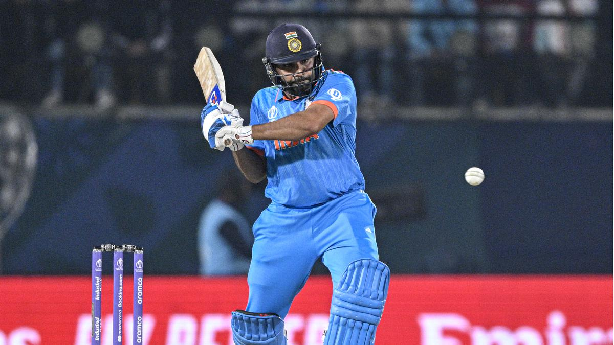

Sports News
IND vs ENG, World Cup 2023: India, looking to extend winning run, faces bruised and battered England

The labyrinth of roads criss-crossing Lucknow's heart are dotted with heritage buildings, harking back to a bygone era. The other end of the spectrum has contemporary streets and suburbs with their skyscrapers. Modern pizzas and ancient tunday kebabs jostle together in a multi-layered culinary landscape. In this city imbued with history's footprints, India takes on England in a World Cup game at the Ekana Stadium here on Sunday. The host gets another chance to extend its winning run. Be it Shubman Gill’s absence in the initial two games or Hardik Pandya’s current hibernation, Rohit Sharma’s men have found a way to stay afloat and land their punches.
Saudi League 2023-24: Al Nassr beats Al Fayha, Ronaldo assists Talisca brace
The win means Al-Nassr are four points behind leaders Al-Hilal and, at the moment, appear the only team capable of stopping the Blues from claiming title number 19. The start of the season, and successive losses, feels like an age ago. There is still a long time to go this season, but the win showed that there was little fatigue from that epic 4-3 win over Al-Duhail of Qatar in the Asian Champions League on Monday. While Al-Fayha almost took the lead through Fashion Sakala inside the first 30 seconds of the match, Al-Nassr did most of the pressing as they looked to go forward.